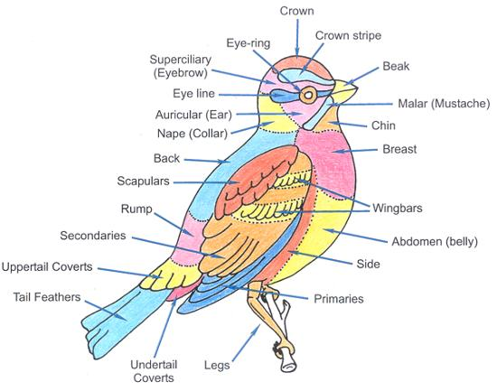

Plants, leaf and flower anatomy is essential to properly classify
The comparison of human anatomy, emotions and characteristics is both familiar and time-honored dating at least as far back as the ancient Egyptians. Anthropomorphic comparisons are comforting, familiar and accurate in many instances. When corresponding anatomy is unclear or inaccurate, clothing analogies can sometimes provide more clarity. When all else fails, there are markings for specific birds.
This diagram from Duncroft is a great infographic. The mosaic of colors and structures of the average bird can help you find the name and subspecies “dirt” on virtually any bird. By employing these terms, we can refine our search to identify just about any bird, assuming we have a database with descriptions of the birds. The comparison of human anatomy, emotions and characteristics is both familiar and time-honored dating at least as far back as the ancient Egyptians. Anthropomorphic comparisons are comforting, familiar and accurate in many instances. When corresponding anatomy is unclear or inaccurate, clothing analogies can sometimes provide more clarity.
Blue Crown of Red-Legged Honeycreeper (top-left) Red Crown of Acorn Woodpecker (top-right) Orange Crown of Collared Whitestart (bottom-left) Red Crown of Gila Woodpecker (bottom-right)
The crown is the top of a birds head, a patch extending roughly from the point above the eyes back to just where the rear of the head begins to slope down the back of the birds neck. In the strictest sense, the crown is only the very top and center of the head and does not extend extensively down the sides of a bird’s face. More casual definitions, however, allow the term crown to be used for the entire broader top of a bird’s head, though the sides of the face and the back of the neck are generally not included in the crown.

Crest: White Cockatoo (top-left) Male Northern Cardinal (top-right) Madagascan Hoopoe (bottom-left) English Budgie (bottom-right)
The crest, in some cases called crown, is a group of feathers that some species of birds have on top of the head. The feathers of these crests can move up and down or be permanently up, depending of the species. The crest is made up of semiplume feathers: a long rachis with barbs on either side. These are plumulaceous feathers, meaning that they are soft and bendable. In birds, these semiplumes are common along the head, neck, and upper back, and may be used for buoyancy and sensing vibrations. Many domesticated bird species have crest feathers. These structures are known to have two origins: selective breeding or mutations. The English Budgie is an example of a crest obtained by selective breeding.
Eurasian Hoopoe with Crest Folded Back (Upupa epops) from Egypt
Crests on birds are generally used for display purposes. Crests can be recumbent or recursive, depending on the species. The recumbent crest has feathers that are straight and lie down essentially flat on the head until the bird fans them out to where they stand up.
Bird Plumes: Little Egret (top-left) Gambel’s Quail (top-right) White-Throared Magpie-Jay (bottom-left) Peacock (bottom-right)
A plume is a special type of bird feather, possessed by egrets, ostriches, birds of paradise, quetzals, pheasants and peacocks.
Eye Ring: Spectacled Thrush (top-left) Eurasian Blackbird (top-right) Malagasy Paradise Flycatcher (bottom-left) Sakalava Weaver (bottom-right)
The eye-ring of a bird is a ring of tiny feathers that surrounds the orbital ring, a ring of bare skin immediately surrounding a bird’s eye. The eye-ring is often decorative, and its color may contrast with adjoining plumage. The ring of feathers is sometimes incomplete, forming an eye arc. Eye-rings are believed to convey various types of signals between individual birds. Some eye-rings appear only at sexual maturity, while others suggest the individual’s age or health status. Individual birds may be included or excluded from reproductive capability due to signals conveyed by the eye-ring. Red carotenoid-based colors of the orbital rings of pheasants are known to be related to health.
Yellow-Rumped Warbler (Setophaga coronata) with Broken Eye Ring
Many species show a broken eye-ring or eye-arcs, when the feathers at the front and back of the eye are dark, while feathers immediately above and below the eye are pale. All of these variations of eye-rings combine with other markings, such as a dark eye-line, pale lores, a pale eyebrow, and so forth, to form a unique pattern on the face of each species.
Forehead: American Goldfinch (top-left) Steller’s Jay (top-right) Female Acorn Woodpecker (bottom-left) Male Black-Cheeked Woodpecker (bottom-right)
A bird’s forehead is located above the beak, between the eyes. The forehead is often used for identification, as the color, markings and shape often vary by species.
Facial Markings: Rufous Collared Sparrow (top-left) Lark Sparrow (top-right) Female Black Headed Grosbeak (bottom-left) Song Sparrow (bottom-right)
Sparrows and finches have many facial lines and it seems natural to compare these lines to corresponding features on the human face. These same lines can be found on many birds of all sizes but they seem to be especially common in smaller birds. If there is only one crown stripe is called just that, the crown stripe. If it is flanked by two additional stripes these are called the lateral crown stripes. The line above the eye is called the supercilium or eyebrow of course. While line directly below the eye is called the malar or mustache line, which often extends downward and back like a true mustache. The auricular (ear) and chin will be discussed in more detail below. Keep in mind that these lines can be both dark and light while retaining their assigned name.
Auriculars: Male Zebra Finch (top-left) Female Bufflehead Duck (top-right) Blue-Streaked Lory (bottom-left) Allen’s Hummingbird (bottom-right)
Birds do have ears, but not in the conventional sense. Like humans, they are equipped with an outer ear, middle ear and an inner ear. But they differ from humans, and mammals in general, in that they don’t have an outer ear structure. Instead, they have funnel-shaped ear openings located on both sides of their heads that are usually positioned just behind and slightly below the eyes. These openings are covered with specialized soft feathers known as auriculars. The auriculars extend back and down from the eye and serve to protect the ears while also cutting down on wind noise. The auricular feathers are often organized to also help direct sound into the ear of the bird, and the auricular feathers of some species can be used as an identification aid to birders, as they can serve as a very good field marking on a variety of species. I thought I would throw in the exquisite Blue-Streaked Lory, an endangered bird from Tanimbar and Babar – two relatively small islands in the Maluku archipelago in Indonesia.
Brown-Hooded Parrot Red Auriculars (Pyrilia haematotis). Laguna del Lagarto Lodge, Costa Rica
The ear coverts on some parrots and near parrots are often very distinctive like these red auriculars on a Brown-Headed Parrot.
Pacific Screech-Owl (Megascops cooperi). Solimar Lodge, Guanacaste Costa Rica
Owls probably have the most acute hearing of any bird. They can hear sounds 10 times fainter than a person can detect. Several features of an owl’s ear make this possible. Owls have an extra-large ear opening surrounded by deep, soft feathers that funnel sound. Furthermore, the feathers over the ear, the auriculars, are modified to be loose and airy. Owls also have a moveable flap of skin controlled by muscles around the ear opening. This flap protects the ear and concentrates sound waves coming from behind. Some owl species also have ear openings that are unevenly set on the sides of their head, leaving one ear higher than the other. This is especially true in the strictly nocturnal species, such as the barn owl and the great horned owl, which rely on their razor-sharp hearing to hunt in the dark. What’s the purpose of having these asymmetric ear openings? An owl can tell if the sound is higher or lower by using the asymmetrical or uneven ear openings.
Lores: Bare-Throated Tiger Heron (top-left) Little Egret (top-right) Great Egret (bottom right)
The lores are the areas of a bird’s face on either side from the base of the bill to the front of the eyes. The lores do not extend further up or down than the width of the bill base. While not part of the bill itself, the lores are the space between the base of a bird’s bill and the forward edge of its eyes. This area may be a different color or show a smudge or eye line that can be an identification clue. The field mark of lores seems to be used most commonly with regards to heron and egrets.
Cere: Crested Caracara (top-left) Peregrine Falcon (top-right) Budgerigar (bottom-left) Cooper’s Hawk (bottom-right)
The lores are the areas of a bird’s face on either side from the base of the bill to the front of the eyes. The lores do not extend further up or down than the width of the bill base. While not part of the bill itself, the lores are the space between the base of a bird’s bill and the forward edge of its eyes. This area may be a different color or show a smudge or eye line that can be an identification clue. The field mark of lores seems to be used most commonly with regards to heron and egrets.
Rictal Bristles: Northern Raven (top-left) Hooded Crow (top-right) Emu (bottom-left) American Robin (bottom-right)
Many birds have bristles around their jaws and face. These are called rictal bristles because they are located at the rictus, the gape of a bird’s mouth. Most insectivorous birds have rictal bristles around their mouth and it’s widely been assumed these help them scoop up insects more effectively, although studies do not seem to have confirmed this theory. Because they are stiff, bristles are also thought to be protective, positioned around the delicate eyes and nostrils. Humans have hairs in the same locations and the protective theory is quite reasonable. Nobody knows for sure, but the consensus seems to be that rictal bristles also have a sensory function, letting the bird know its speed and orientation in the air. Crows and ravens have pronounced rictal bristles while the Robin has much smaller hairs.
Little Spotted Kiwi (Apteryx owenii). Auckland Museum, New Zealand
The Kiwi doesn’t fly but is a nocturnal forager with very long rictal bristles which the bird probably uses to find food in the soil. Because their nostrils are located at the end of their long beaks, kiwi can locate insects and worms underground using their keen sense of smell, without actually seeing or feeling them. This sense of smell is due to a highly developed olfactory chamber and surrounding regions. My own theory is that the long rictal bristles on Kiwis function much like the whiskers on cats and other nocturnal animals, allowing silent movements around obstacles in the dark.
Gape: Mexican Jay (top-left) House Sparrows (top-right) Marsh Wren (bottom-left) Neotropic Cormorant (bottom-right)
The gape is the interior of the open mouth of a bird, and the gape flange is the region where the two mandibles join together at the base of the beak. The width of the gape can be a factor in the choice of food. This is a fleshy area at the base of the bill where the upper and lower mandibles meet. In young birds, it is often enlarged or may seem so because the birds have not developed their mature feathers to help conceal it, and it may be brightly colored so their mouths are more noticeable when they beg for food. On some species, such as the bananaquit, the gape remains colorful on adult birds. In the Neotropic Cormorant, the yellow-orange gape can be a good field mark. In the Mexican Jay the gape is swollen and pink suggesting poor health.
Chin: Buff-Throated Saltator (top-left) Cedar Waxwing (top-right) Southern Lapwing (bottom-left) Yellow-Crowned Night Heron (bottom-right)
Not directly part of the bill, the chin is the area of feathers immediately adjacent to the base of a bird’s mandible. The chin is often hard to see and often blurs into the throat, bib or chest. Waterbirds are particularly easy to identify the chin feathers since their bills protrude more markedly. In some species, the color of the chin may vary from the throat or face, providing a valuable identification clue.
Female Chinspot Batis (Batis molitor)
Small birds are especially difficult to find with a defined chin since the chin blends quickly into the throat and then into the breast. I could not help myself when I found this lovely Chinspot Batis, named for the chinspot although it might as well be named the throatspot based on location.
Caruncle: King Vulture (top-left) Muscovy Duck (top-right) Wattled Crane (bottom-left) Male Gould’s Wild Turkey (bottom-right)
A caruncle is defined as ‘a small, fleshy excrescence that is a normal part of an animal’s anatomy’. Within this definition, caruncles in birds include wattles (or dewlaps), combs, snoods, and earlobes. Probably the most spectacular caruncle would be the King Vulture. The head and neck are devoid of feathers, the skin shades of red and purple on the head, vivid orange on the neck and yellow on the throat. On the head, the skin is wrinkled and folded, and there is a highly noticeable irregular golden crest attached on the cere above its orange and black bill, this caruncle does not fully form until the bird’s fourth year. Both the african Wattled Crane and the wild Male Gould’s Wild Turkey are a close second.
Frontal Shield: Common Gallinule (top-left) American Coot (top-right) Wattled Jacana (bottom-left) Purple Gallinule (bottom-right)
In some bird species, the bill extends in a frontal shield onto the forehead. The frontal shield, also known as a facial shield or frontal plate, is a feature of the anatomy of several bird species. Located just above the upper mandible, and protruding along the forehead, it is composed of two main parts: a hard, proteinaceous callus and a soft, fleshy corium. It is thought to play roles in protection, mate identification, sexual selection, and territorial defense.
Hooked Bill: Black Vulture (top-left) American Kestrel (top-right) Barred Owl (bottom-left) Female Slaty Flowerpiercer (bottom-right)
Birds of prey and birds that scavenge carrion, including eagles, hawks, falcons, ospreys, owls, vultures and buzzards, have hooked beaks. The upper portion of the beak curves down over the lower portion and comes to a sharp point. These beaks are designed for fatally biting prey and tearing flesh. One lovely exception are the Flowerpiercers, birds who steal nectar by piercing the base of flowers.
Duck Bills and Nails: Male and Female Mallard (top-left) Male Ruddy Duck (top-right) Female Greater Scaup (bottom-left) Canadian Goose (bottom-right)
Dabbling ducks like mallards, pintails, and gadwalls have round-tipped bills that are relatively flat, about as long as the duck’s head, and deeper than they are broad at the base. The edges of the bill are soft because waterfowl often find food by touch, feeling their food much as we sense things with the tip of our finger. Many waterfowl bills have a nail at the end that is used for hooking or moving food items as we might use our fingernails to manipulate something.
Mallard Duckling (Anas platyrhynchos)
After their incubation, ducklings must break out of the egg. To do this, ducklings are equipped with an egg tooth, a sharp appendage on the bill that falls off once they are free of the egg. Hatching typically takes three to 24 hours. While this photograph does not show an actual egg tooth, the nail is pink and it was too good not to include.
Billing between Bare-Throated Tiger Heron (Tigrisoma mexicanum)
During courtship, mated pairs of many bird species touch or clasp each other’s bills. Termed billing (also nebbing in British English), this behavior appears to strengthen pair bonding. The amount of contact involved varies among species. Some gently touch only a part of their partner’s beak while others clash their beaks vigorously together.

Nape: White Faced Whistling Duck (top-left) Marigold Lorikeet (top-right) Kererū (bottom-left) African Jacana (bottom-right)
The nape is the back of a bird’s neck. The color of the nape will often match either the bird’s crown or back, and that color may extend onto the sides of the neck to varying degrees depending on the species. Many songbirds and raptors have very short necks and the nape is a relatively small area, while waterfowl and wading birds typically have longer necks with a more distinct nape that may also be called a hindneck. Similarly, the color of the nape can continue into the crown or even around the neck into the chin and throat.
Flight Feathers of a Parrott
Wings are complicated and have functions which are probably incompletely understood. Primary feathers located on the outside edges of the wings, these are the feathers that are narrowest and longest. Wing coverts are the feathers that are located on the leading edge of the wings. They cover the bases of the primary and secondary feathers. The alula is a small projection on the anterior edge of the wing of modern birds and a few non-avian dinosaurs. The word is Latin and means “winglet”; it is the diminutive of ala, meaning “wing”. The alula is the freely moving first digit, a bird’s “thumb”, and typically bears three to five small flight feathers, with the exact number depending on the species. In most situations, the alula is held flush against the wing; however, it can be manipulated. When flying at slow speeds or landing, the bird moves its alula slightly upwards and forward, which creates a small slot on the wing’s leading edge. This functions in the same way as the slats on the wing of an aircraft, allowing the wing to achieve a higher than normal angle of attack – and thus lift – without resulting in a stall.
Pine Siskin (Spinus pinus). Sierra Vista, Arizona
A wing bar is a distinct field mark on the top of a bird’s wing caused by contrasting colors on the tips of the primary and secondary coverts. Whether the wing is folded at rest or extended in flight, these contrasting tips form a distinct stripe of color across the wing that can be useful for identifying bird species. When the wing is spread, the bar will show as a stripe down the center, stretching along the length of the wing roughly from the bird’s body to the wingtip, though not all wing bars stretch the entire wingspan.
Wing Spots: Male White-Winged Tanager (top-left) Male Red-winged Blackbird (top-right) Male White-Lined Tanager (bottom-left) Verdin (bottom-right)
Wing patches or spots of color on the wing can be valuable field marks in birds. These little patches of color remind me of WWII fighting aces that received honors for their heroics.
Brown-Hooded Parrot (Pyrilia haematotis). Laguna del Lagarto Lodge, Costa Rica
Spanning from wing to wing, underparts denote a bird’s underside. The “armpit” of a bird, often host covert feathers called axillaries. Other names include, axillary feathers and lower humeral coverts. A bird’s wingpit is the equivalent to the human armpit, the area close to the body on the interior of the underside of the wing. This area can show distinct colors or markings vital for bird identification like the red feathers in the axillaries of the Brown-Hooded Parrot. Look for streaks, barring, or color patches on any in-flight bird you’re trying to identify. Often, I include photography of the wings spread which are not nearly as good as a sitting bird but notice how different the colors are when the wings are spread. The names are the same, primaries, secondaries and coverts but note how the color of the underside of the wings is quite different than the top.
Breast: American Robin (top-left) Adolescent American Robin (top-right) Black Phoebe (bottom-left) Black-Billed Magpie (bottom-right)
The chest (also called the breast) is the upright part of the bird’s body between the throat and the abdomen or stomach. A bird’s chest may be differently colored or marked with stripes, streaks or spots that can help with identification. The Robin has an orange chest from the neck down to the white abdomen or stomach which is replaced by by spots in the adolescent. Where are the breast stops and the abdomen begins is the subject of some discussion. The Black Phoebe or the Black-Billed Magpie pictured here both would be considered to have dark breasts or chests with white abdomens.
Bib: Egyptian Plover (top-left) Male Gambel’s Quail (top-right) California Scrub Jay (bottom-left) Female Northern Flicker (bottom-right)
Defining a bib on a bird can be a bit tricky since the reference is to an item of clothing rather than anatomy. I personally have a fondness for bibs with borders, regardless of their size. A small bib might cover the neck, larger it might cover the breast. Or in the case of the Northern Flicker, it might be an apostrophe at the top of the breast.
Gorget: Male Fiery-Throated Hummingbird (top-left) Male Volcano Hummingbird (top-right) Male Tufted Coquette (bottom-left) Male Allen’s Hummingbird (bottom-right)
Gorgets (from the French gorge meaning throat) started off in the Middle Ages as a woman’s fashion piece, usually linen, that wrapped around their neck or was part of a hood. lt eventually became a leather or steel collar worn by men to serve as protection for the throat, eventually growing into a full piece of armor itself that would cover the upper portion of the chest as well as the throat. The bird field making gorget is used almost exclusively for hummingbirds, those lovely sparkling necklaces that glow at just the right angle.
Resplendent Quetzal (Pharomachrus mocinno). Paraiso Quetzal Lodge, Costa Rica
Even though the Resplendent Quetzal is not a hummingbird and some might call the green an upper chest, I think it possesses all the royalty and glamor to be called a gorget.
Figure Nigel Hawtin
The cloaca is the single posterior opening for a bird’s digestive, urinary, and reproductive tracts and is used to expel feces and lay eggs. The cloaca is found on the rear of the body under the base of the tail, covered by feathers on the extreme lower abdomen. Those feathers surrounding the cloaca are called the crissum or undertail coverts. The cloaca and the area of the body where it is located, as well as the physical slit opening itself, is also frequently called the vent. During mating, the male perches on top of the female, who moves her tail feathers to the side to expose her cloaca. Arching back, the male rubs his cloaca against hers. During the breeding season, the cloacal area swells and the tissues protrude slightly outside the body to make breeding easier. Male birds show more swelling, and bird banders will gently blow on a bird’s vent to expose the cloaca and examine its size to determine a bird’s gender.
Chestnut-Mandibled Toucan or Swainson’s Toucan (Ramphastos ambiguus swainsonii). Laguna del Lagarto lodge, Costa Rica
As I said above, the under tail coverts or cloaca are beneath the tail. In the Chestnut-Mandibled Toucan we see white rump feathers above the tail and red under tail coverts or cloaca.
A Passerine Male Purple Honeycreeper (Cyanerpes caeruleus). Asa Wright Nature Center, Trinidad
Sometimes known as perching birds or songbirds, passerines are distinguished from other orders of birds by the arrangement of their toes (three pointing forward and one back), which facilitates perching. The foot of a passerine has three toes directed forward and one toe directed backward, called anisodactyl arrangement, and the hind toe (hallux) joins the leg at approximately the same level as the front toes. This arrangement enables passerine birds to easily perch upright on branches. Even though about half of all birds are passerine the evolutionary history of the passerine families and the relationships among them remained rather mysterious until the late 20th century. In many cases, passerine families were grouped together on the basis of morphological similarities that, it is now believed, are the result of convergent evolution, not a close genetic relationship. For example, the wrens of the Americas and Eurasia; those of Australia; and those of New Zealand look superficially similar and behave in similar ways, and yet belong to three far-flung branches of the passerine family tree; they are as unrelated as it is possible to be while remaining Passeriformes.
Plants, leaf and flower anatomy is essential to properly classify

Sky Island vegetation biomes

Aenean ornare velit lacus, ac varius enim lorem ullamcorper dolore aliquam.
I am usually out hiking, birding or traveling but you can reach me at: